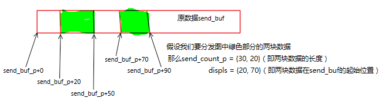

MPI学习
过程说明
MPI 通过某种语言指定 MPI 的函数。过程调用的参数有 IN (输入)、OUT (输出) 或 INOUT (输入/输出)。含义如下：
- 调用时使用的但没有修改的参数记为IN,
- 调用时可以修改的参数记为OUT,
- 调用时使用的并可修改的参数记为INOUT。
有一种特殊情况－－如果一个参数是**隐含对象**的一个句柄，并且这个对象被过程调用修改，那么这个参数记为OUT。即使句柄本身没被修改，仍记为OUT－－我们用OUT属性表示句柄所引用的部分被修改。
2019.04.09补充： INOUT参数是Fortran里的用法
启动
函数原型讲解
MPI_INIT()
初始化MPI系统。
原型：
1 | |
参数argc_p和argv_p是指向参数argc和argv的指针，该函数返回一个int类型的错误码。程序不使用argc_p和argv_p时，置NULL即可。
必须在任何其它MPI例程之前被调用。它必须至少被调用一次；随后的调用是错误的。
一般忽略该函数返回的错误码。
MPI_FINALIZE()
MPI系统使用完毕，清除所有MPI状态，释放所有为MPI分配的资源。
原型：
1 | |
一旦调用此例程，就不调用MPI例程。用户必须确定在进程调用MPI_FINALIZE前，所有涉及此进程的挂起的通信完成。
MPI_INITALIZED()
检查是否已经完成了MPI的初始化。
原型：
1 | |
如果已经调用MPI_INIT()，flag为true；否则为false。
该函数用于决定是否调用MPI_INIT()。
它是唯一的可以在MPI_INIT()前调用的函数。
MPI_ABORT()
进行最大的尝试，来退出comm组的所有任务。
原型：
1 | |
通信子和组
基本概念
为了理解 MPI 中的组与通信子，我们先来了解以下这些名词的概念以及联系。
组（group）
组是一些进程标志符的一个有序集（不是进程的集合）。进程是与实现相关的对象。
每一个进程都有一个绝对的编号，即pid号。
同一个进程可以同时属于多个进程组（每个进程在不同进程组中有个各自的rank号，而在一个组内，每个进程的rank是唯一的 ，rank连续且从0开始。）
它本质表示通信子中所有进程的集合。**一个通信子对应一个进程组。**
也就是说组对象存在于通信子环境内，给通信子定义和描述通信参与者（进程），并提供表示和管理进程的若干功能。
组用模糊的组对象来描述，因此不能直接从一个进程到另一个进程传送。
可在一个通信子使用组来描述通信空间中的参与者并对这些参与者进行分级（这样在通信空间中为它们赋予了唯一的名字）
上下文（context）
上下文只是划分通信空间时所用的一个抽象概念，只是通信子所具有的一个属性，不是显式的 MPI 对象，它们仅作为通信子实现的一部分而出现。
比如说：
在组间通信中（严格的点对点通信），每个通信子中都存放这两个上下文标志，一个在组 A 中用于发送，在组 B 中用于接收，第二个在组 B 中用于发送，在组 A 中用于接收。
同一进程内的不同通信子有不同的上下文。上下文实质上是一个系统管理的标志，用于保证通信子在点对点和 MPI 定义的集合通信中的安全性。安全意味着同一通信子内的集合和点对点通信互不干扰，而且不同通信子上的通信也互不干扰。
通信子（communicator）
通信子定义了封装 MPI 通信的基本模型，是一个综合的通信概念。
它包括上下文（context）、进程组（group）、虚拟处理器拓扑（topology）。
通信子可分为两类：组内通信子（intra-communicator）和组间通信子（inter-communicator）。
- 组内通信子（intra-communicator）
- 组间通信子（inter-communicator）
默认通信子
MPI_COMM_WORLD
函数MPI_Init()的调用过程中，将用户启动的所有进程组了一个组（通信子），该通信子即为MPI_COMM_WORLD。
通信域的产生
通信域产生的方法。根据看过的资料，大概有三种方法，先简要了解路子即可：
在已有通信域基础上划分获得
1 | |
在已有通信域基础上复制获得
1 | |
在已有进程组的基础上创建获得
1 | |
常用函数
MPI_COMM_SIZE()
查询一个通信子内的进程总数。
原型：
1 | |
MPI_COMM_RANK()
查询本进程在通信子内的进程号。
原型：
1 | |
点对点通信
由进程完成的消息的发送和接收是基本的MPI通信机制。基本的点对点通信操作是send和receive。
阻塞通信
MPI最常被使用到的函数就是MPI_Send()和MPI_Recv()，其作用自然是一目了然，不必多说，但这两种函数的语义有着潜在的陷阱。
如果一个进程试图接收消息，但没有相匹配的消息，那么这个进程就会一直阻塞在那里，即进程悬挂；
如果一个进程试图发送消息，会由MPI系统决定这个消息是否进入消息缓存。假如MPI缓存了消息，那么在该消息被接收以前，发送调用就可以完成了。但假如因性能等原因, MPI选择不缓存消息，那么这个进程也会阻塞在那里，直到消息被接收。所以我们称这种通信叫：阻塞发送、阻塞接收。
MPI_SEND()
发送消息。
原型：
1 | |
由上至下，分别是：
| 变量名 | 解释 |
|---|---|
msg_buf_p |
要发送的数据指针 |
msg_size |
要发送的数据大小 |
msg_type |
要发送的数据类型 |
dest |
接收这个数据的进程编号 |
tag |
该数据用途的补充说明 |
comm |
通信子 |
关于
MPI_Datatype：MPI中传输的数据类型是预先定义好了的。
MPI datatype C datatype MPI_CHARsigned charMPI_SHORTsigned short intMPI_INTsigned intMPI_LONGsigned long intMPI_UNSIGNED_CHARunsigned charMPI_UNSIGNED_SHORTunsigned short intMPI_UNSIGNEDunsigned intMPI_UNSIGNED_LONGunsigned long intMPI_FLOATfloatMPI_DOUBLEdoubleMPI_LONG_DOUBLElong doubleMPI_BYTEMPI_PACKED
MPI_BYTE是一个由8个二进制位组成的值（即一个字节）。不同于一个字符，一个字节是不用解释的。MPI_PACKED则是一个数据包。关于
tag：该参数是非负
int型，用于区分看上去完全一样的数据。实际运用场景中，进程之间会有大量数据的交流，有些数据用于计算，有些用于输出。为了区分它们，我们常常把他们加个标签（tag），比如用于计算的标记为0，用于输出的标记为1。这些都是自己规定的。关于
msg_size：
msg_size和msg_type两个参数共同决定要发送的数据量。
如果要发送字符串，msg_size需要加上字符串结束符\0所占的字符数量，msg_type就是MPI_CHAR。
MPI_RECV()
接收MPI_SEND()发送的消息。
原型：
1 | |
由上至下，分别是：
| 变量名 | 解释 |
|---|---|
msg_buf_p |
要接收的数据指针 |
buf_size |
要接收的数据大小 |
buf_type |
要接收的数据类型 |
source |
发送这个数据的进程号 |
tag |
该数据用途的补充说明 |
comm |
通信子 |
status_p |
该数据的其他信息 |
注意，要使得通信正常完成，需要recv_buf_type = send_msg_type，recv_buf_size >= send_msg_size。而且tag要一致。
关于通配符：
MPI允许接收者忽略消息来源和标签等信息。
这时就可以给source赋值为MPI_ANY_SOURCE，给tag赋值为MPI_ANY_TAG。
像这样的特殊常量，被称作通配符（wildcard）。
只有接收者可以使用通配符，也就是说MPI的通信方式是push而不是pull。关于
status_p：一般我们不使用这个参数，直接给它赋值
MPI_STATUS_IGNORE即可。但当我们使用通配符时，有可能我们即使接收到信息，也不知道这个消息的size、source、tag等信息。所以当有这种需要的时候，就会使用参数status_p。status_p的数据类型是MPI_Status，这是一个有至少三个成员的结构，包含MPI_SOURCE、MPI_TAG和MPI_ERROR。
使用前我们需要先进行如下定义：
MPI_Status status;然后，将
&status作为最后一个参数传递给MPI_Recv之后，就可以检查以下两个成员来确定source和tag了：
2status.MPI_SOURCE
status.MPI_TAG但是
size这个信息则不在应用程序可以直接访问到的域中，我们需要调用函数MPI_Get_count找回它。
该函数原型：
2
3
4int MPI_Get_count(
MPI_Status* status_p /* in */,
MPI_Datatype type /* in */,
int* count_p /* out */);函数通过
count参数返回接收到的元素数量。但如果count这个信息不是必须的，就没有必要为这个值浪费一次计算。
MPI_SENDRECV()
接收另一个进程里的MPI_Sendrecv()发送的消息，相当于MPI_Send()和MPI_Recv()合二为一。
原型：
1 | |
由上至下，分别是：
| 变量名 | 解释 |
|---|---|
send_buf_p |
要发送的数据指针 |
send_size |
要发送的数据大小 |
send_type |
要发送的数据类型 |
dest |
目的进程号 |
send_tag |
该数据用途的补充说明 |
recv_buf_p |
要接收的数据指针 |
recv_size |
要接收的数据类型 |
source |
源进程号 |
recv_tag |
该数据用途的补充说明 |
comm |
通信子 |
status_p |
该数据的其他信息 |
非阻塞通信
虽然名字叫非阻塞通信，但本质上的通信的过程依然是阻塞的，只不过是暂时解放了当前进程，可以不用干等罢了。
TODO
集合通信
集合通信，顾名思义是一组进程间的通信。
在MPI中这类函数包括:
- 栅障同步（barrier synchronization）
- 使组内所有进程同步
- 广播（broadcast）
- 一个进程向一条消息广播发送到组内的所有进程,包括它本身在内
- 收集（gather）
- 一个进程从组内所有进程收集数据
- 分散（scatter）
- 一个进程向组内所有进程分发数据
- 归约（reduce）
- 一个进程将组内每个进程输入缓冲区中的数据组合起来并求解
- 全局规约（all reduce）
- 规约之后把结果返回给组内所有进程
- 规约分散（reduce-scatter）
- 规约之后分发结果
- 全局收集（all gether）
- 收集数据之后把收集到的数据返回给组内所有进程
- 搜索（scan）
函数原型讲解
MPI_REDUCE()
储存全局操作的结果（比如求全局总和）到指定进程。
原型：
1 | |
由上至下，分别为：
| 变量名 | 解释 |
|---|---|
input_data_p |
要输入的数据指针 |
output_data_p |
要输出的数据指针 |
count |
要输入的数据的数据量 |
datatype |
数据类型 |
operator |
要对整合的的数据进行的操作 |
dest_process |
输出数据的接收进程 |
comm |
通信子 |
如果count的参数大于1，那么函数MPI_Reduce()就可以应用到数组上，比如向量的加减法。
关于
MPI_Op：MPI系统已经预定义了一些规约操作符
操作符 实际操作 MPI_MAX最大值 MPI_MIN最小值 MPI_SUM求和 MPI_PROD求积 MPI_LAND逻辑与 MPI_BAND按位与 MPI_LOR逻辑或 MPI_BOR按位或 MPI_LXOR逻辑异或 MPI_BXOR按位异或 MPI_MAXLOC最大值且相应位置 MPI_MINLOC最小值且相应位置 关于预设操作
MPI_MAXLOC和MPI_MINLOC：
这两个操作的一个用途是计算一个全局最小值(最大值)和这个值所在的进程序列号。使用这样的操作时需要注意：此时output_data_p返回则是（u，r）的指针。前者是极值，后者是进程号。而且datatype需要使用MPI系统另设的常数
名字 u的数据类型 r的数据类型 MPI_FLOAT_INTfloatintMPI_DOUBLE_INTdoubleintMPI_LONG_INTlong intintMPI_2INTintintMPI_SHORT_INTshort intintMPI_LONG_DOUBLE_INTlong doubleint可以看出在C语言描述里
r一定是整型量。用户也可以自定义操作。函数
MPI_OP_CREATE()将用户自定义的操作和op绑定在一起。参数
MPI_Op在函数MPI_REDUCE()MPI_ALLREDUCE()MPI_REDUCE_SCATTER()MPI_SCAN()
中均可使用，包括用户自定义操作。
MPI_ALLREDUCE()
储存全局操作的结果（比如求全局总和）并返回到所有进程。
原型：
1 | |
由上至下，分别为：
| 变量名 | 解释 |
|---|---|
input_data_p |
要输入的数据指针 |
output_data_p |
要输出的数据指针 |
count |
要输入的数据量 |
datatype |
数据类型 |
operator |
对整合的数据进行的操作 |
comm |
通信子 |
全局归约操作(all-reduce)可以由归约操作(reduce)和广播操作(broadcast)来实现,但直接实现可以获得更好的性能。
MPI_BCAST()
将属于一个进程的数据发送给通信子中的所有进程。
原型：
1 | |
由上至下，分别为：
| 变量名 | 解释 |
|---|---|
data_p |
要广播的数据指针 |
count |
要广播的数据量 |
datatype |
数据类型 |
source_proc |
广播者的进程号 |
comm |
通信子 |
MPI_SCATTER()
把一组量为n的数据分成(64&n/(comm_sz))分，分别发给通信子内所有进程。
原型：
1 | |
由上至下，分别为：
| 变量名 | 解释 |
|---|---|
send_buf_p |
要发送的数据指针 |
send_count |
发送到各个进程的数据个数(仅对于根进程) |
send_type |
要发送的数据类型 |
recv_buf_p |
接收数据指针 |
recv_count |
待接收的元素个数 |
recv_type |
接收数据类型 |
src_proc |
发送进程的进程号 |
comm |
通信子 |
对于所有非根进程,send_buf_p被忽略。
关于
send_count：参数
send_count表示的是发送到每个进程的数据量，而不是send_buf_p所引用的内存的数据量。
注意：
函数MPI_Scatter()将send_count个对象所组成的第一个块发送给了0号进程，下一个块发送给1号进程，以此类推。
所以MPI_Scatter()只适用于块划分法，且数据量n必须能被comm_sz整除。
为了解决这个问题，需要使用这个函数的升级版：MPI_Scatterv()。
MPI_SCATTERV()
MPI_SCATTERV()对MPI_SCATTER()的功能进行了扩展,它允许向各个进程发送个数不等的数据,因为此时send_count_p是一个数组.同时还通过增加一个新的参数displs提供给用户更大的灵活性,使得可以将根进程的任意一部分数据发往其他进程。
原型：
1 | |
由上至下，分别为：
| 变量名 | 解释 |
|---|---|
send_buf_p |
要发送的数据指针 |
send_count_p |
发送给各个进程的数据量组成的整型一维数组 |
displs |
发送给各进程的数据在原数据的位置组成的整型一维数组 |
send_type |
发送消息缓冲区中元素类型 |
recv_buf_p |
接收消息缓冲区的起始地址 |
recv_count |
接收消息缓冲区中元素的个数 |
recv_type |
接收消息缓冲区中元素的类型 |
src_proc |
要发送消息的进程号 |
comm |
通信子 |
同样，对于所有非根进程，send_buf_p被忽略。
关于
send_count_p和displs的概念可以用一张图来理清：

MPI_GATHER()
把所有进程的数据都集中到一个进程。
原型：
1 | |
由上至下，分别为：
| 变量名 | 解释 |
|---|---|
send_buf_p |
|
send_count |
|
send_type |
|
recv_buf_p |
|
recv_count |
|
recv_type |
|
comm |
组间通信
TODO
进程拓扑
TODO
MPI_CART_CREATE()返回一个指向新的通信子的句柄, 这个句柄与笛卡尔拓扑信息相联系。如果reorder = false, 那么在新组中每一进程的标识数就与在旧组中的标识数相一致。否则, 函数会重新对进程编号（也许会选择一个好的将虚拟拓扑嵌入到物理机器的方法）。如果笛卡尔网格的总尺寸小于COMM组的大小, 那么有些进程返回的MPI_COMM_NULL, 类似MPI_COMM_SPLIT()。如果说明的网格大于组的尺寸, 调用出错。
1 | |